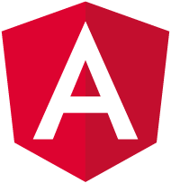
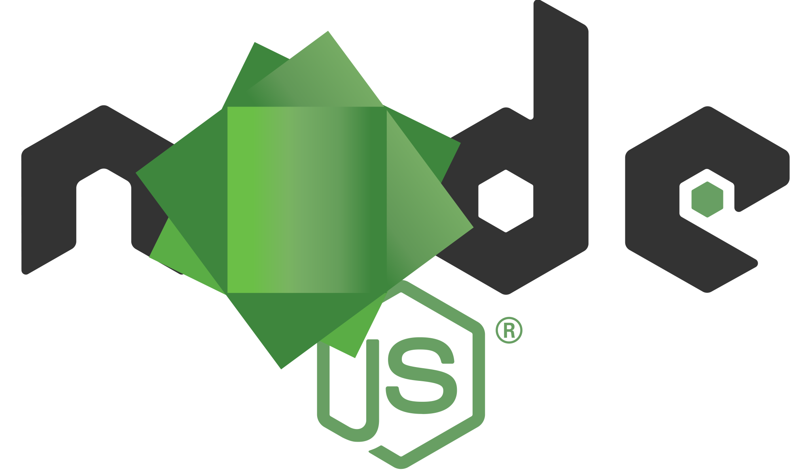

Hard Skills
Langages / Frameworks :

 HTML5, CSS3 (bonne maîtrise)
HTML5, CSS3 (bonne maîtrise)

 Sass, JavaScript (bonne maîtrise)
Sass, JavaScript (bonne maîtrise)
 Bootstrap (étudié)
Bootstrap (étudié)

 Angular (étudié), React (étudié)
Angular (étudié), React (étudié)
 Node.JS (étudié)
MongoDB (étudié)
jQuery (étudié)
 Vue.js (étudié)
Vue.js (étudié)
 SQL (étudié)
SQL (étudié)
 PHP (étudié)
PHP (étudié)
Logiciels et environnements :

 Mac OS, Windows (bonne maîtrise)
Mac OS, Windows (bonne maîtrise)
 Linux (notions)
Linux (notions)

 Git, GitHub (notions)
Git, GitHub (notions)
 Visual Studio Code (notions)
Visual Studio Code (notions)
 Photoshop (notions)
Photoshop (notions)
 InDesign (bonne maîtrise)
InDesign (bonne maîtrise)


 Suite Office (Maîtrise professionnelle)
Suite Office (Maîtrise professionnelle)
 Soft Skills
Soft Skills
- Autonomie : définition des priorités, recherche de solutions aux problèmes.
- Organisation : planification, méthode Pomodoro, to-do-lists (Trello pour mon activité associative et ma formation).
- Rigueur : respect des délais, attention portée aux projets.
- Curiosité : goût d’apprendre, implication dans le travail.
Expériences précédentes
Emplois : assistant commercial dans le milieu du livre pour les représentants commerciaux de L’École des Loisirs, Gallimard, puis Flammarion, pendant 4 ans (début 2015 - fin 2019).
Quelques-unes de mes différentes missions :
- Automatisations : bons de commande et processus d’analyse commerciale (par macros Excel - VBA).
- Respect des délais, réalisation de statistiques, de tableaux de bords et de bons de commande. Logiciels utilisés : SAP, Excel.
Quelques projets d’études (2009-2014) :
- Réalisation d’ebooks conçus en HTML et CSS.
- Réalisation du site d’une maison d’édition fictive conçu en HTML et CSS.